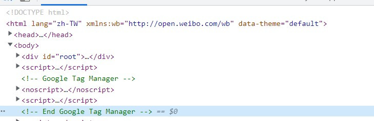
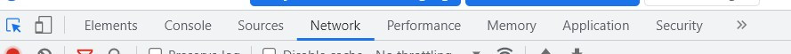
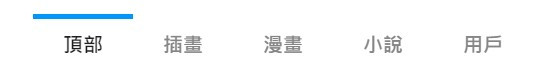
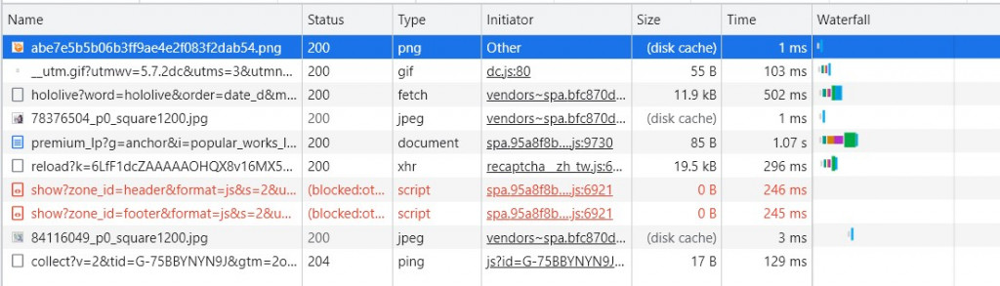
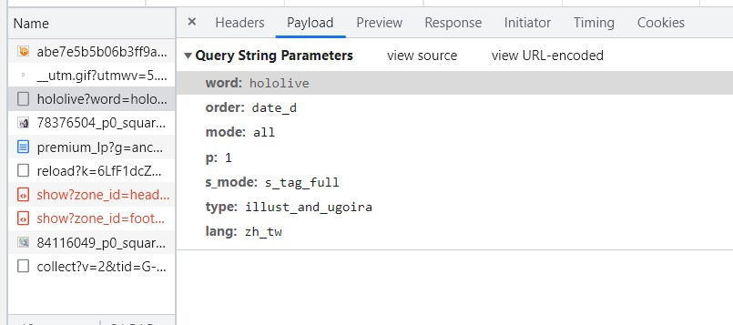
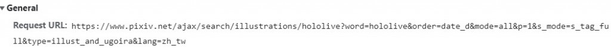
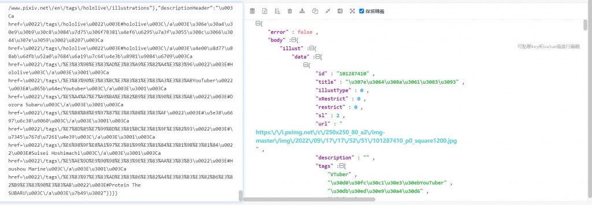

【day14】預測Hololive七期生的樣貌-生成式對抗網路(Generative Adversarial Network)(上)
發布日期: 2022-09-18 12:52:50
原文連結: https://ithelp.ithome.com.tw/articles/10292214
生成式對抗網路(Generative Adversarial Network)
GAN是一種使用深度學習的模型，GAN在訓練中所做的事情非常簡單，就是利用判別器(Discriminator)來判別生成器(Generator)所創建的圖片，我們舉一個簡單的例子來說明。
假設今天有一個手藝不好卻想要製作假抄(圖片)的人A(生成器)，與一個負責抓捕他的警察B(判別器)，那最一開始的結果肯定是A一直被B抓到，可是每次A都在被抓的時候能學到一些經驗，並更換一些方法，於是B開始越來越分辨不出來A所製作出來的鈔票是真還是假的，甚至到最後完全分辨不出來，那麼A所製作的鈔票就是一個完美的結果(生成圖片)
簡單來說GAN的概念就是道高一尺，魔高一丈，利用這種方是我們可以產生一些非常厲害的圖像，換臉、自動修圖、畫風轉移，AI畫畫與許許多多的IG抖音濾鏡，都是一種GAN技術在生活中能看見的技術。
資料蒐集
還記得我們在【day5】爬蟲與股票預測-長短期記憶模型(Long short-term memory) (上)時介紹的爬蟲嗎?今天我們要使用的就是較困難的requests。
- 1.AJAX介紹
- 2.requests分析pixiv網站
- 3.建立瀏覽器環境
- 4.迴圈取得網站資料
- 5.整理資料並存檔
AJAX(Asynchronous JavaScript and XML)介紹
在傳統的網頁中，我們每次向伺服器請求資料時，伺服器會接收並處理傳來的請求，然後送回傳一個結果，但這個做法浪費了許多資源，因為請求與迴傳所看到的網站資訊大致上都相同，每次的請求都需要與伺服器之間做溝通，這會導致伺服器需要處理大量的資訊，導致使用者的網站常常卡住。而AJAX這個技術能夠只將必要的資訊送出，並回傳必要的資料，使我們只接收少量的資源達成相同的效果，那我們在網站中會看到那些AJAX的技術呢?我相信許多人每天都會用到只是不知道而已，這邊我舉幾個例子:youtube的影片清單網下滾動會更新，IG往下滾動會刷新資料，YT影片結束後會自動轉跳。這種在網站上發送請求後更改一小部分的技術基本上都是使用AJAX來達成的。
requests分析pixiv網站
首先我們為了要預測hololive的未來成員，可以使用到現有成員圖片來推測未來的風格，但官方的圖片又非常的少，於是我將目標放在二創的圖片上，也就是其他繪師的創作。
我們先前往pixiv搜尋hololive，這時候可以看到這個網址
https://www.pixiv.net/tags/hololive
但當我們對這個網站發送請求時，會發現找不到想要的資料，pixiv中圖片都是動態請求的資料，所以我們只能取得一些靜態的資料
r = requests.get(url)

那該怎麼取得動態的資料呢?我們需要去偽造一個AJAX的請求方式
首先我們先按下F12到NetWork的地方

接下來在pixiv中點擊插畫

這時候就會看到NetWork中多出了許多資料，這些資料就是瀏覽器對網站使用的AJAX請求的方式

所以我們只需要找到網站是使用了哪一個方式，來顯示我們看到的頁面，這樣就能找到我們要的資料。我們可以考慮網站動作的優先順序，想一下如果是要請求資料，那這個動作會放在哪裡?當然是請求的前幾筆!所以要找到的請求動作應該會靠在蠻前面的地方，我們可以點擊到paylod的地方觀察這些資料。

這時候會看到我們關鍵字"hololive"，並且在其他的請求中沒有這個字，那就大致上確定是這個網址了
之後將頁面切換到headers來取得AJAX的URL，與請求的cookies(若沒有只能請求10頁)

在網址中可以看到幾個參數word、order、mode、s_mode、type、lang，在這邊我只看得懂word、type、lang這三個參數，所以我決定去找到其他標籤與分類的網址
https://www.pixiv.net/ajax/search/illustrations/hololive?word=hololive&order=date_d&mode=all&p=1&s_mode=s_tag_full&type=illust_and_ugoira&lang=zh_tw
https://www.pixiv.net/ajax/search/manga/ONEPIECE?word=ONEPIECE&order=date_d&mode=all&p=1&s_mode=s_tag_full&type=manga&lang=zh_tw
查看到變動的地方我們可以知道這個網址的參數涵義如下，接下來就能通過網址來操作了。
https://www.pixiv.net/ajax/search/{類型}/{搜尋名稱}?word={搜尋名稱}&order=date_d&mode=all&p={頁數}&s_mode=s_tag_full&type=illust_and_ugoira&lang={語系}
我們來看看我們用requests.get(AJAX_url)的結果，並通過JSON格式化工具來查看一下結構

可以看到作品的名稱、圖片網址、ID、上傳時間都在body -> illust的data裡面，所以我們只需要利用pythno保留這部分的資訊即可
datas = json.loads(r.text)["body"]["illust"]["data"]
最後把程式加入迴圈之中這樣就能換頁並獲取資訊了
headers = {'Referer':'https://www.pixiv.net/'}
#初始頁
i = 1
while(1):
#AJAX url
holo_url = f'https://www.pixiv.net/ajax/search/illustrations/hololive?word=hololive&order=date_d&mode=all&p={i}&s_mode=s_tag_full&type=illust_and_ugoira&lang=zh_tw'
r = requests.get(holo_url)
# 狀態錯誤跳脫迴圈
if r.status_code != 200:
break
#保留頁面資訊
datas = json.loads(r.text)["body"]["illust"]["data"]
for data in datas:
#找到作品名稱
name = data["alt"]
#找到作品ID
pic_id = data["id"]
保存圖片
我們剛剛取的到的資訊只有作品名稱與ID，那該如何找到圖片呢?首先先點進隨便一個圖片裡面，對圖片按右鍵->新分頁中開啟圖片應該會獲得
https://i.pximg.net/c/250x250_80_a2/img-master/img/2021/10/21/00/00/07/93576944_p0_square1200.jpg
不過怎麼點擊上面的網址都只會顯示403 error，因為我們在發送請求的資料沒有附帶網站的網域。我們知道pixiv的網址是https://www.pixiv.net/ ，但是我們找到的URL卻是https://i.pximg.net/ ，這代表網站需要標頭參數referer，所以我們需要加入pixiv的網址來解決這個問題
headers = {'Referer':'https://www.pixiv.net/'}
request.get(AJAXurl,headers=headers)
接下來為了能加入程式到迴圈之中，我們需要分析網址，我們可以得到以下的結果
https://i.pximg.net/img-master/img/{年}/{月}/{日}/{時}/{分}/{秒}(作品上傳日期)/{作品ID}_p{第幾張圖片}_master1200.jpg
所以我們只要將前面的作品ID與時間加入到我們的第二個網址中就能取得我們圖片的資訊，不過在日期中，包含了許多-、t、+、:等不需要的文字，所以先來處理一下格式問題，之後將網址組合起來就可以了。
def makeUrl(pic_id,creat_time,j):
creat_time=creat_time.replace("-",' ')
creat_time=creat_time.replace("T",' ')
creat_time=creat_time.replace(":",' ')
creat_time=creat_time.replace("+",' ')
creat_time =creat_time.split(' ')
url = f"https://i.pximg.net/img-master/img/{creat_time[0]}/{creat_time[1]}/{creat_time[2]}/{creat_time[3]}/{creat_time[4]}/{creat_time[5]}/{pic_id}_p{j}_master1200.jpg"
return url
接下來我們重新用requests.get得到圖片內容，之後用write的方式就能將圖片保存下來了
url = makeUrl(pic_id, creat_time, j)
r = requests.get(url, headers=headers)
if r.status_code != 200:
break
with open(f'./holo/{pic_id}_{j}.jpg','wb') as f:
f.write(r.content)
最後我們加入一些換頁的動作
完整程式碼
import json
import requests
def makeUrl(pic_id,creat_time,j):
creat_time=creat_time.replace("-",' ')
creat_time=creat_time.replace("T",' ')
creat_time=creat_time.replace(":",' ')
creat_time=creat_time.replace("+",' ')
creat_time =creat_time.split(' ')
url = f"https://i.pximg.net/img-master/img/{creat_time[0]}/{creat_time[1]}/{creat_time[2]}/{creat_time[3]}/{creat_time[4]}/{creat_time[5]}/{pic_id}_p{j}_master1200.jpg"
return url
headers = {'Referer':'https://www.pixiv.net/'}
i = 1
while(1):
holo_url = f'https://www.pixiv.net/ajax/search/illustrations/hololive?word=hololive&order=date_d&mode=all&p={i}&s_mode=s_tag_full&type=illust_and_ugoira&lang=zh_tw'
r = requests.get(holo_url)
if r.status_code != 200:
break
datas = json.loads(r.text)["body"]["illust"]["data"]
for data in datas:
name = data["alt"]
pic_id = data["id"]
creat_time = data["createDate"]
print(name)
j = 0
while(1):
url = makeUrl(pic_id, creat_time, j)
r = requests.get(url, headers=headers)
if r.status_code != 200:
break
with open(f'./holo/{pic_id}_{j}.jpg','wb') as f:
f.write(r.content)
j+=1
i+=1
明天來建構一個gan神經網路，來測試看看效果吧
課程中的程式碼都能從我的github專案中看到
https://github.com/AUSTIN2526/learn-AI-in-30-days